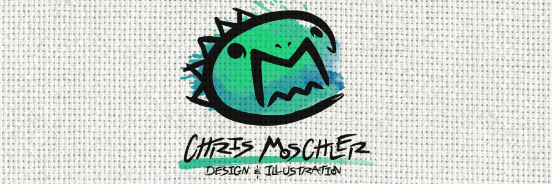
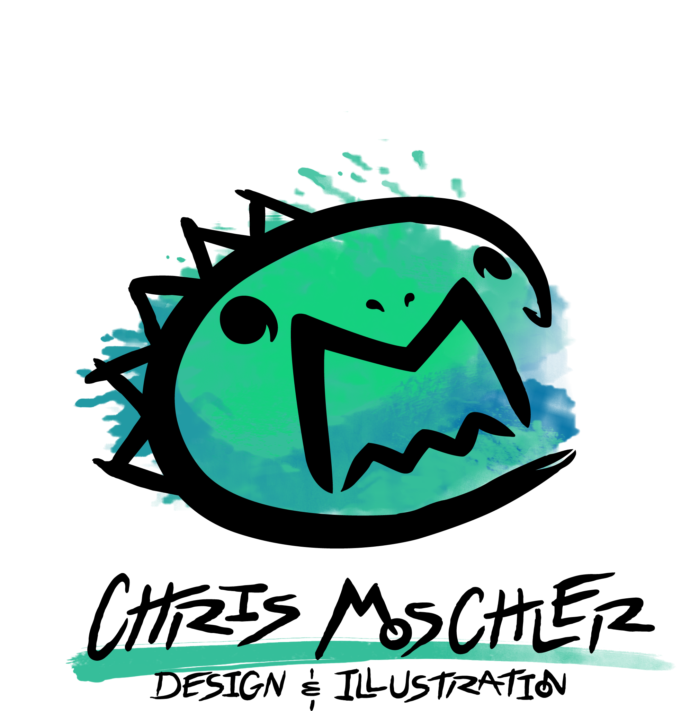
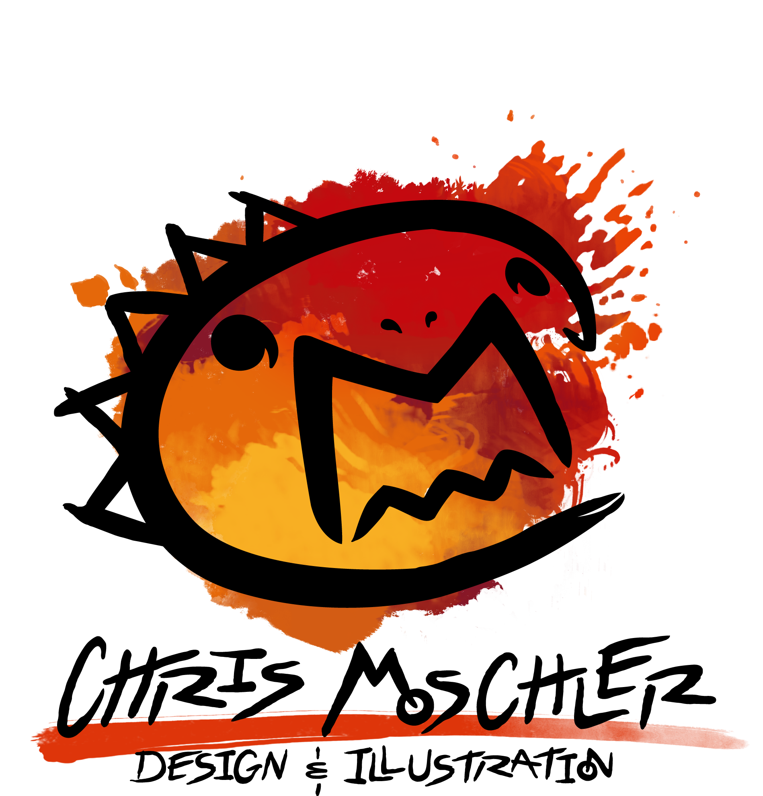
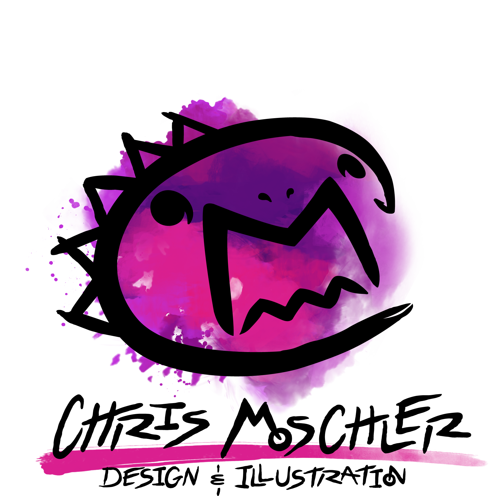

Chris Moschler Design & Illustration
BRANDING | PRINT DESIGN | WEB DESIGN
Flexibility, creativity, and ingenuity are three concepts I try to apply to all of my work. When it came to branding myself, I wanted to utilize and embody all three of those while putting each service I provide on display in some way. So, I challenged myself to create a standalone, playful icon out using my initials. The logo itself is sketchy with a hand drawn look, which reflects my love of illustration. I have a soft spot for street art as well, which served as an influence in the custom lettering of the text and the gritty look of the paint splatters. The logo includes three different color variations and splatter shapes to provide variety, and allow it to be visually flexible enough to fit anywhere it needs to.



PROJECT OUTCOME
Since its launch, this rebrand has been a very satisfying success. I receive comments and compliments on the new logo frequently, and it seems to be fairly memorable, sticking with clients and potential clients quite well. It accomplishes exactly what I want it to, and represents my personality and work very well.WHAT I DID
- Created a logo that embodied myself and my work well
- Designed a custom typeface and additional graphics to support the logo and form a visual identify in whatever media I needed to create
- Created a portfolio website that easily showcases work, and tells the story behind each project